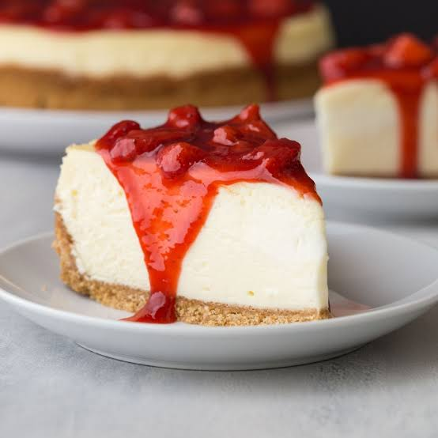

Preparation: 20 minutes · Cooking: 0 minutes (no-bake) · Serves: 8
Ingredients
- 200g crushed biscuits mixed with 50g melted butter
- 400g cream cheese mixed with 1/2 cup powdered sugar
- 1 cup whipped cream
- Ready-made strawberry sauce for topping
Instructions
- Press the buttered crushed biscuits firmly into the bottom of a pan.
- Mix the cream cheese, sugar, and whipped cream together, then spread it over the biscuit base.
- Refrigerate for 3 hours, then top with strawberry sauce and serve.
A delicious no-bake strawberry cheesecake with a crunchy biscuit base and creamy topping.